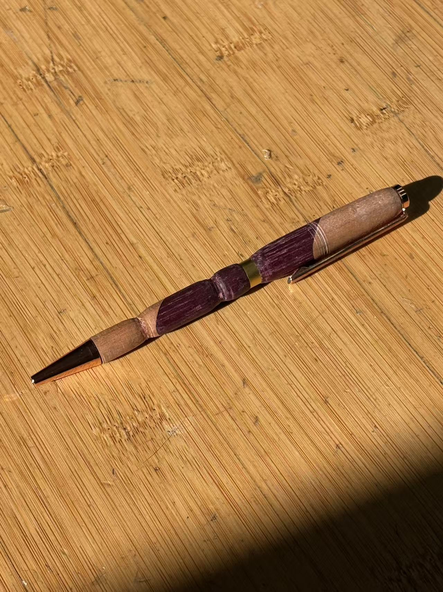
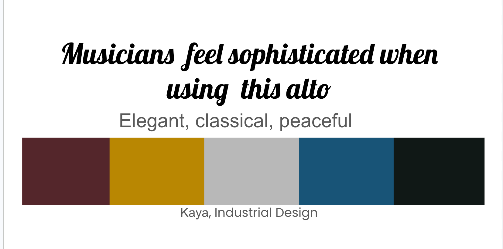

Musical expression
Flowing lines, the treble clef, and the quiet elegance of an instrument inspire the pen’s clip and visual rhythm.
RHYTHM · FLOW · EXPRESSION
A writing instrument shaped for two ways of thinking — the musician who follows a melody, and the mathematician who follows a pattern.

Music and mathematics may seem like different worlds, but both begin with a simple mark and grow into something larger. A note becomes a melody. A symbol becomes an equation. This pen celebrates that shared moment of making.
The design draws from the expressive character of musical instruments, the clarity of mathematical notation, and the warmth of handcrafted objects.
Flowing lines, the treble clef, and the quiet elegance of an instrument inspire the pen’s clip and visual rhythm.
Geometry, proportion, and repeated patterns guide the balance of the body and the transitions between its sections.
Warm wood tones, deep wine-purple surfaces, and small metallic accents let the materials become part of the experience.
The silhouette keeps the familiar proportions of a pen while introducing a more sculptural, segmented body. Each transition gives the hand a visual and tactile point of reference.
A closer look at the product language: a tactile body, deliberate proportions, and a visual identity that feels equally at home beside sheet music or a notebook of equations.
Dimensions and mechanism specifications are intentionally left open until the physical prototype is measured and the refill system is confirmed.
A subtle music-inspired detail makes the pen personal without overwhelming its form.
Proportion and geometry give the object a composed, intentional silhouette.
Contrasting surfaces invite the user to notice the pen even between moments of writing.
A familiar writing tool designed to feel distinctive in daily use.
A parallel design exploration studies how a musical symbol can become a functional clip, while a twist mechanism keeps the writing experience clean and compact. This reference informs the design direction rather than claiming these parts are already built into the photographed prototype.

A personal object for people who move between creative expression and analytical thought.
The physical prototype explores an expressive, segmented silhouette with deep burgundy tones, warm natural material, and a small metallic transition. Rather than looking like a conventional technical instrument, it aims to feel like an object with personality — one that belongs beside a piano, a sketchbook, or a page of proofs.
The design is still a form study. The final refill, clip mechanism, and exact dimensions can be developed alongside user testing to make sure that the character of the object is matched by reliable everyday performance.
The mood combines the warmth of a well-used instrument with the precision of a carefully drawn diagram. Rich, grounded colors are balanced by a restrained metallic accent.
Warm natural finish
References the tactile quality and individuality of handcrafted objects.
Deep burgundy / wine
Brings visual depth and a subtle connection to the mood of a concert hall.
Muted metallic accent
Creates a precise visual pause between the body sections.

Resonance is an exploration of the space where structure meets imagination — designed for the people who find both in the act of writing.
Back to the beginning ↑